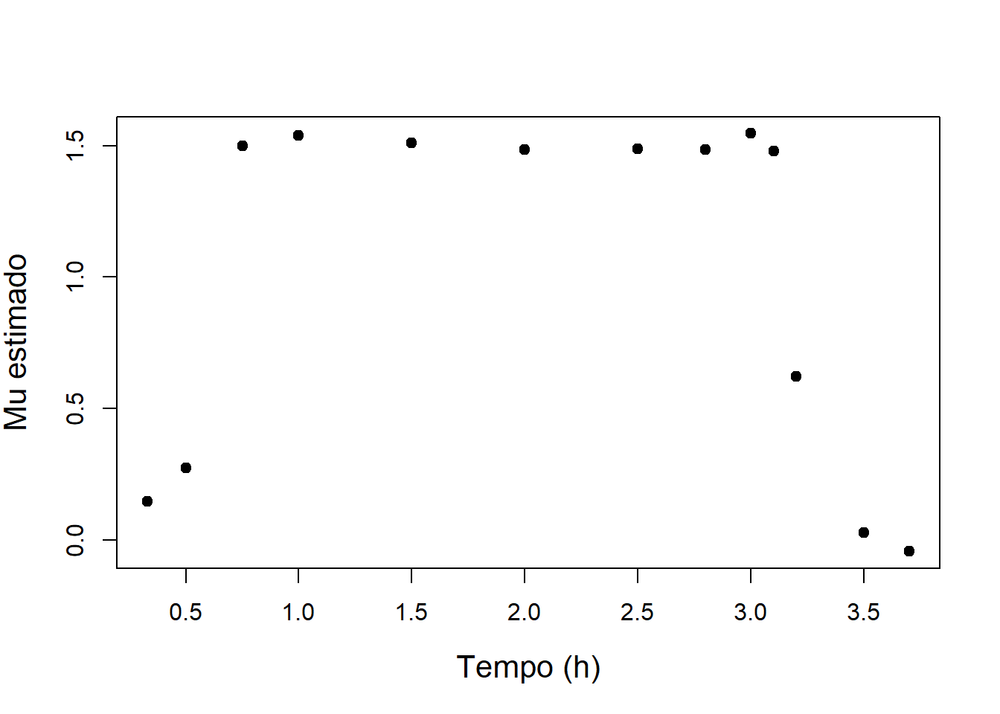

14 Determinação de crescimento microbiano
14.1 O modelo de crescimento
O modelo de crescimento exponencial que representa a taxa de variação da biomassa em relação ao tempo (\(t\), em \(h\)) pode ser expresso, matematicamente, pelo produto da taxa específica de crescimento de microrganismos (\(\mu\), em \(h^{-1}\)) pela concentração de biomassa (\(x\), em \(kg.m^{-3}\)) no reator:
\[ \frac{dx}{dt} = \mu \, x \]
Como \((1/x) \, dx = \mu \, dt\), tem-se que
\[ \int_{x_a}^{x_b} \frac{1}{x} dx = \int_{t_a}^{t_b} \mu \, dt \]
E, desse modo,
\[ \ln(x_b) - \ln(x_a) = \mu \int_{t_a}^{t_b} dt \]
Portanto, o valor de \(\mu\) é determinado pela expressão
\[ \mu = \frac{ \ln(x_b/x_a) }{ t_b - t_a} \]
14.2 Exemplo de aplicação
E. coli foi utilizada para produzir o hormônio do crescimento porcino recombinante. A bactéria cresce aerobicamente em batelada, com glicose como substrato limitante do crescimento. As concentrações de células e de substrato foram medidas em função do tempo de cultivo, com os resultados ao lado.
Fonte: Bioprocess Engineering Principles, Pauline Doran, 2nd Edition
| Tempo (h) | Concentração de células, x (kg/m³) |
|---|---|
| 0 | 0.2 |
| 0.33 | 0.21 |
| 0.5 | 0.22 |
| 0.75 | 0.32 |
| 1 | 0.47 |
| 1.5 | 1 |
| 2 | 2.1 |
| 2.5 | 4.42 |
| 2.8 | 6.9 |
| 3 | 9.4 |
| 3.1 | 10.9 |
| 3.2 | 11.6 |
| 3.5 | 11.7 |
| 3.7 | 11.6 |
14.3 Exercício 1
Determine o valor do \(\mu_{max}\) utilizando planilhas eletrônicas e o programa R.
Resposta - com todos os dados
#Dados experimentais da biomassa em função do tempo
tempo <- c(0, 0.33, 0.5, 0.75, 1, 1.5, 2., 2.5, 2.8, 3, 3.1, 3.2, 3.5, 3.7) #horas
biomassa <- c(0.2, 0.21, 0.22, 0.32, 0.47, 1, 2.1, 4.42, 6.9, 9.4, 10.9, 11.6, 11.7, 11.6) #kg/m³
# Aplicar logaritmo natural aos dados de biomassa
ln_biomassa <- log(biomassa)
# Ajuste linear
ajuste_linear <- lm(ln_biomassa ~ tempo)
# Extrair o coeficiente angular da reta (que representa mu_max)
coeficientes <- coef(ajuste_linear)
mu_max <- coeficientes[2]
# Exibir o valor de mu_max
cat("O valor de mu_max é:", mu_max, "h^-1\n")## O valor de mu_max é: 1.314963 h^-1# Estimativas de mu por diferenças finitas de primeira ordem
plot(tempo[-1], diff(ln_biomassa)/diff(tempo), ylab = "Mu estimado", xlab = "Tempo (h)", cex.lab = 1.3, pch =19)
Resposta - dados filtrados
#Dados experimentais da biomassa em função do tempo
tempo <- c(0.75, 1, 1.5, 2., 2.5, 2.8, 3, 3.1) #horas
biomassa <- c(0.32, 0.47, 1, 2.1, 4.42, 6.9, 9.4, 10.9) #kg/m³
# Aplicar logaritmo natural aos dados de biomassa
ln_biomassa <- log(biomassa)
# Ajuste linear
ajuste_linear <- lm(ln_biomassa ~ tempo)
# Extrair o coeficiente angular da reta (que representa mu_max)
coeficientes <- coef(ajuste_linear)
mu_max <- coeficientes[2]
# Exibir o valor de mu_max
cat("O valor de mu_max é:", mu_max, "h^-1\n")## O valor de mu_max é: 1.49765 h^-1